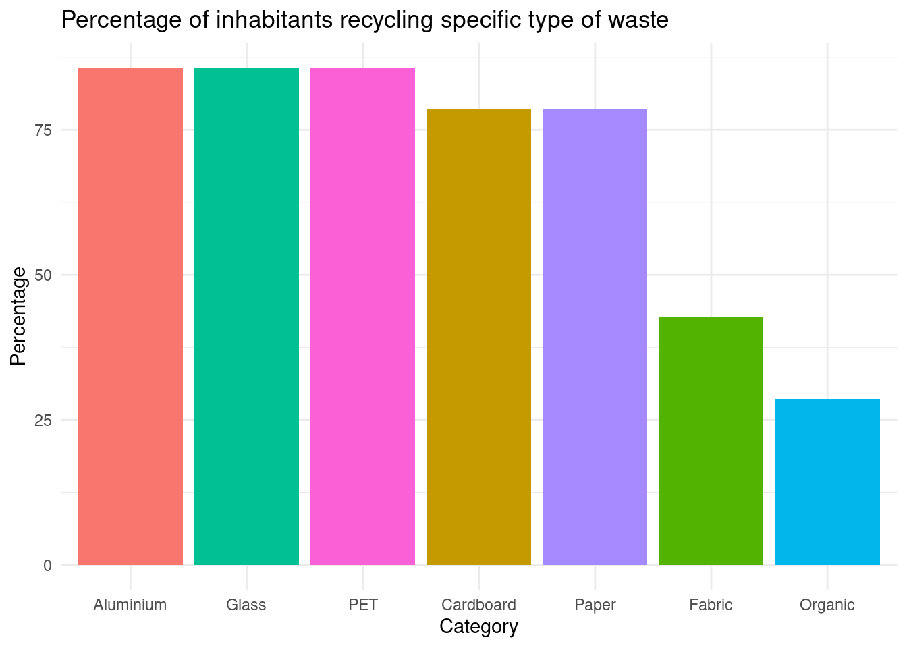
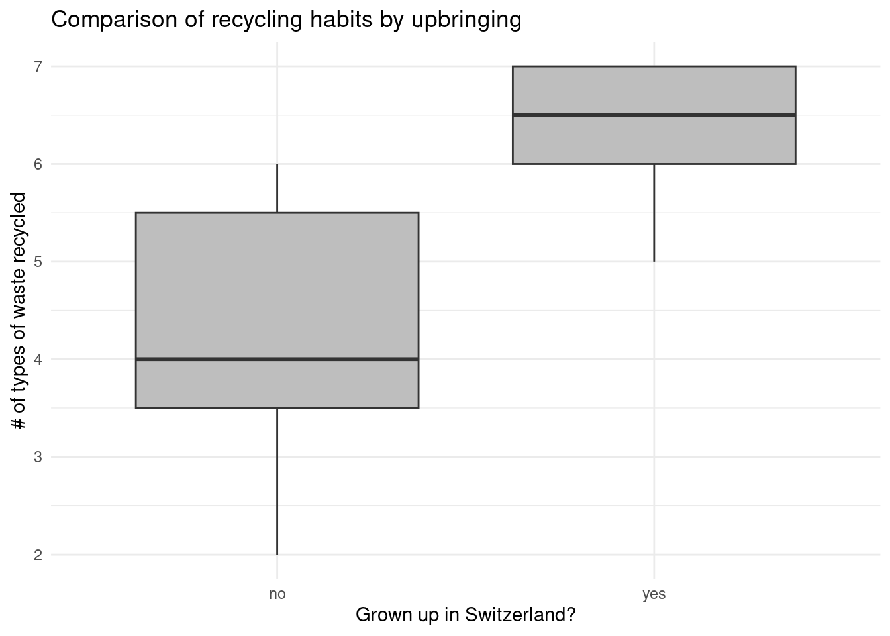
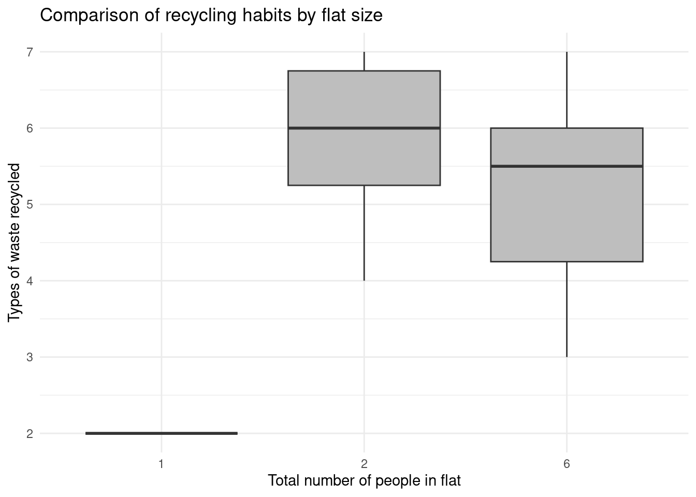

library(dplyr)
library(tidyr)
library(ggplot2)
library(forcats)
data <- read.csv2("/cloud/project/data/processed/survey_data_processed.csv")RBtL Capstone Project Report
Introduction
For this small study, 13 inhabitants of the “Livingscience” student homes on campus Hönggerberg of ETH Zürich were questioned about their recycling habits regarding home-produced waste. The resulting data is used to assess how well the students who live there follow the local waste separation and recycling standards, while furthermore identifying potential barriers for consistent recycling habits. In order to do this, key factors in upbringing and living environment were also collected. Due to the resulting focused approach, not all of the data points obtained in the survey were used for this report, although they might be of interest for further analysis.
Methods
For the questioning, a survey was presented to passers-by around the Livingscience student homes. The subject’s answers were recorded on a Google Form on a smartphone. The filling out of answers was done by the questioner in order to avoid wrong inputs by subjects. The survey, among other things, recorded where the subjects grew up, how many people live in their flat, and how they handle the seven types of waste which can be recycled directly on campus (paper, cardboard, glass, aluminium, pet, organics, and fabric). All subjects who were uninformed in some capacity were given a short briefing about the recycling standards on campus after finishing the survey.
Results
Load data and libraries
Survey Subject Overview
Table 1 shows an overview of the subjects questioned in order to obtain the data for this project. Besides basic information, it also shows the average self-assessment of how familiar they feel with waste separation and recycling on campus.
library(gt)
means <- data |>
summarise(
age_avg = mean(age, na.rm = TRUE),
flat_avg = mean(people_in_flat, na.rm = TRUE),
livingscience_avg = mean(livingscience_duration, na.rm = TRUE),
assessment_avg = mean(campus_familiarity, na.rm = TRUE)
)
means |>
gt() |>
fmt_number(decimals = 2)|>
cols_label(age_avg = "Age",
flat_avg = "Flat Size",
livingscience_avg = "Duration",
assessment_avg = "Self-assessment")|>
tab_header(
title = "Subject overview",
subtitle = glue::glue("Averages (mean)")
)| Subject overview | |||
|---|---|---|---|
| Averages (mean) | |||
| Age | Flat Size | Duration | Self-assessment |
| 21.31 | 3.77 | 18.62 | 8.23 |
Waste type recycling percentages
Figure 1 shows the percentage of questioned Livingscience inhabitants who stated that they recycle waste of the given types instead of throwing it in the trash. It provides an overview over which types of waste are being recycled to what extent by students living on campus.
recyclables <- data |>
select(Paper, Cardboard, Glass, Aluminium, PET, Organic, Fabric)
count_recycle <- recyclables |>
summarise(across(everything(), ~ sum(. == "recycle")/14*100)) |>
pivot_longer(everything(), names_to = "Category", values_to = "Percentage")
ggplot(data = count_recycle,
aes(x = reorder(Category, -Percentage),
y = Percentage,
fill = Category)) +
geom_col(show.legend = FALSE) +
labs(title = "Percentage of inhabitants recycling specific type of waste",
x = "Category",
y = "Percentage") +
theme_minimal()

Recycling habits by upbringing
Figure 2 shows the number of different types of waste which inhabitants of Livingscience recycle, grouped by whether they grew up in Switzerland or not. This is done to identify the extent to which the environment the subjects grew up in has an influence on their recycling habits.
individual <- data |>
rowwise() |>
mutate(recycle_count = sum(c(
Paper == "recycle",
Cardboard == "recycle",
Aluminium == "recycle",
PET == "recycle",
Organic == "recycle",
Fabric == "recycle",
Glass == "recycle"
))) |>
mutate(grown_up_in_switzerland = case_when(
switzerland_duration == 100 ~ "yes",
switzerland_duration != 100 ~ "no",
is.na(age) ~ NA_character_
)) |>
ungroup() |>
na.omit(data)
ggplot(data = individual,
aes(x = grown_up_in_switzerland,
y = recycle_count)) +
geom_boxplot(fill = "grey") +
labs(title = "Comparison of recycling habits by upbringing",
x = "Grown up in Switzerland?",
y = "# of types of waste recycled") +
theme_minimal()

Recycling habits by environment
Figure 3 shows, like the previous chart, the number of different types of waste which the subjects claimed to recycle, but this time depending on the number of people living in their flat in total. The one subject living alone is, for lack of further data in this category, represented as a line.
ggplot(data = individual,
aes(x = as.character(people_in_flat),
y = recycle_count)) +
geom_boxplot(fill = "grey") +
labs(title = "Comparison of recycling habits by flat size",
x = "Total number of people in flat",
y = "Types of waste recycled") +
theme_minimal()

Conclusions
- The data of the survey has shown that while most students living at Livingscience recycle various types of waste consistently, there is room for improvement, especially regarding composting and old fabric collection.
- The results have further shown that there is a noticeable difference in recycling habits between students who grew up in Switzerland and those who didn’t. This is assumed to stem from the circumstance that waste disposal habits are primarily attained at home, and there are little instructions on how (or why) to do it when arriving in Switzerland unless one specifically looks to inform themselves.
- Although it might be an outlier, the only subject who lives alone also happens to put the least effort into recycling among all subjects by far. It can be argued that this probably wouldn’t happen with roommates who establish a consistent waste disposal task plan in their flat. Author note: Interestingly, about half of the subjects hinted at the fact that someone else in their flat is “in control” of the recycling situation, and that they were merely followers who might not separate their waste as well if they didn’t have someone breathing down their neck. This highlights the important effect that peer pressure has on forming recycling habits.
References
No references have been needed for this report.